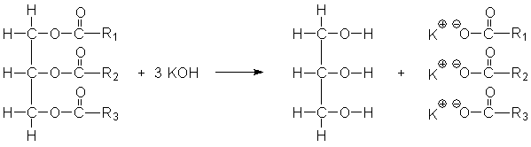

Skript - Seifen und Fette
Einführung
Mit Hilfe dieses Skriptes sollen Sie sich das Thema Seifen und Fette selbstständig erarbeiten. Selbstständig bedeutet wirklich SELBST und STÄNDIG.
Der Unterricht im klassischen Sinne hat aufgehört. Sie können Ihr eigenes Tempo bestimmen und sich Ihre eigenen Partner suchen. Sollte die Lehrkraft nicht da sein, haben Sie nun immer das Material um selbstständig zu arbeiten.
Die Lehrkraft soll Ihnen dabei als Berater zur Seite stehen. Wenn Sie Fragen haben oder auf Probleme stoßen, die Sie weder allein noch im Team lösen konnten, dann fragen Sie nach!
Für jedes Kapitel dieser Reihe ist angegeben, wie Sie vorgehen sollten. Die Vorüberlegungen sollen Ihnen helfen Wissen zu reaktivieren oder Wissenslücken zu schließen. Wenn Sie sich an die vorgegebenen Vorgehensweisen hallten, sollte es keine Probleme geben.
Vielleicht fragen Sie sich jetzt, warum die Lehrer so faul sein dürfen und Sie jetzt alles allein machen müssen. Der Grund ist recht einfach: die Lehrer haben alles bereits so vorbereitet, dass Sie sich intensiv mit einem Thema beschäftigen können. Dadurch bleibt es besser in Ihrem Gedächtnis. Sie lernen effektiver die Inhalte, verbessern Ihr eigenes Zeitmanagement und analysieren Ihre eigenen Fähig- und Fertigkeiten.
Symbole im Skript

In diesen Texten finden Sie Erklärungen und Hintergründe!
Die Quellen finden Sie in den Fußnoten. Diese Quellen können Ihnen auch als Quizvorbereitung helfen.
Übrigens, nicht alle Quellen sind Wikipedia. Aber es ist eine nützliche und in Chemie akzeptierte
Quelle.
Bild: Information by dDara from the Noun Project
An diesen Stellen sollen Sie Ihr Wissen auffrischen!
Sie sollten die entsprechenden Themen schon vorher im (Chemie-)Unterricht behandelt
haben.
Falls nicht, arbeiten Sie Ihre Wissenslücken bitte selbstständig auf.
Bild: Arrow by Aleksandr Vector from the Noun Project

Es soll keine Langeweile aufkommen.
Wenn Sie mit den Aufträgen bereits fertig sind, während Ihre Gruppe noch arbeitet,
können Sie sich hier noch weiter in das Thema vertiefen.
Bild: thunder by Pascal Heß from the Noun Project

Dieses Symbol weißt immer auf eine Durchführung für ein Experiment hin.
Bild: Chemistry by Eucalyp from the Noun Project

Das Zeitsymbol soll Ihnen zeigen, wie lange Sie für das jeweilige Kapitel brauchen sollten.
Diese Zeitangabe dient aber nur als Orientierung. Am Ende müssen Sie nur die Planung der Lehrkraft und Ihre
eigene Zeitplanung beachten.
Bild: clock by Mr. Minuvi from the Noun Project
Bewertung
Die Bewertung im Semester erfolgt anhand von:
- min. 2 Tests
- 2 Protokollen
- Mitarbeit im Unterricht
- digitalem Portfolio
- ggf. Klausur
Auf Grund unvorhergesehener Umstände (z.B. Pandemie) kann sich diese Liste auch ändern. Bitte halten Sie mit Ihrer Lehrkraft Rücksprache.
Das digitale Portfolio
Das Portfolio ist ein Teil der Arbeit und Bewertung. Zum einen dient es der Sicherung und Sammlung aller Arbeitsergebnisse. Sie können und sollten in diesem Portfolio alles sammeln, was Sie an Materialien und Produkten selbst erarbeitetet haben. Die zweite Funktion des Portfolios ist die Darstellung Ihrer eigenen Entwicklung. Mit Hilfe des Portfolios belegen Sie Ihren Lernfortschritt und reflektieren Ihre Arbeitsergebnisse und Arbeitsweisen. Diese Reflexion sollte sich auf alle Arbeitsprozesse, wie z.B. Recherchen oder Gruppenarbeiten, beziehen. Die Selbstreflexion sollte unabhängig von den Arbeitsaufträgen der Lehrkraft erfolgen.
Darüber hinaus können Sie dieses Portfolio auch als Teil Ihrer zukünftigen Bewerbungsmappen nutzen. Ihr zukünftiger Arbeitgeber erlangt dadurch ein umfassenderes Bild von Ihnen. Sehen Sie das Portfolio also nicht nur als weiteren Schulhefter sondern auch als Selbstdarstellungsmöglichkeit.
Die Bewertung des Portfolios erfolgt zum Ende des jeweiligen Semesters und erfolgt mit Hilfe des gegebenen Bewertungsrasters.
Hilfreiche Fragen für die Reflexion
Falls Sie anfangs bei der Reflexion Probleme haben, können Sie sich erst einmal an diesen Fragen orientieren. Die Reflexion sollten Sie regelmäßig durchführen und als Fließtext ausformulieren.
- Habe ich die Zeit effektiv genutzt?
- Habe ich alle Aufträge gelöst?
- Habe ich alles verstanden?
- Habe ich gut allein gearbeitet?
- Habe ich gut in der Gruppe gearbeitet?
- Was kann ich in der nächsten Stunde besser machen?
Netzdiagramm zur Schnellreflexion
In Ihrem digitalen Portfolio sollen Sie Ihren Arbeits- und Lernprozess sinnvoll reflektieren um Verbesserungsmöglichkeiten zu finden und dann umzusetzen. Dazu sollten Sie regelmäßig, also beispielsweise nach jedem Kapitel, eine Reflexion durchführen.
Dieses Netzdiagramm soll Ihnen dabei helfen. Sie können den Code für das Diagramm an die jeweilige Stelle in ihrem digitalen Portfolio kopieren und dort anpassen. Dadurch visualisieren Sie für sich ihren Fortschritt. Am Ende sollte das Netzdiagramm komplett gefüllt sein.
Zusätzlich sollten Sie die Reflexion in einem Fließtext ausformulieren. Das könnten Seite auch unterhalb des Diagramms in Ihrem Portfolio machen.
Bewertung des digitalen Portfolios
| Umsetzung digitales Portfolio (Gewicht: 1) | |
|---|---|
| 1BE | 2BE |
| HTML | schönes HTML |
| 3BE | 4BE |
| HTML,CSS | schönes HTML, schönes CSS (JavaScript) |
| Dokumentation (Gewicht: 2) | |
|---|---|
| 1BE | 2BE |
| Weniger als zur Hälfte erfüllt | Mehr als zur Hälfte erfüllt |
| 3BE | 4BE |
| Weitgehend erfüllt | Vollständig erfüllt |
| Reflexion (Gewicht: 3) | |
|---|---|
| 1BE | 2BE |
| Kaum Reflexionsfähigkeit erkennbar. Die Kurzreflexionen wurden selten genutzt oder das Semester wurde abschließend reflektiert oder die Reflexion wurde während des Semsters manchmal vorgenommen. | Reflexionsfähigkeit zum Teil erkennbar. Die Kurzreflexionen wurden selten genutzt. Das Semester wurde abschließend reflektiert oder die Reflexion wurde während des Semsters manchmal vorgenommen. |
| 3BE | 4BE |
| Gute Reflexionsfähigkeit erkennbar. Die Reflexion wurde mehrfach während des Semsters vorgenommen. Die Kurzreflexionen wurden genutzt. Das Semester wurde abschließend ergänzend reflektiert. | Sehr gute Reflexionsfähigkeit erkennbar. Die Reflexion wurde mehrfach während des Semsters vorgenommen. Die Kurzreflexionen wurden sinnvoll genutzt. Das Semester wurde abschließend ausführlich ergänzend und glaubhaft reflektiert. |
Die Herstellung von Seife
Nachdem Sie in den bisherigen Jahrgängen über verschiedene Stoffe gesprochen haben, ist es nun Zeit, aus diesen bekannten Stoffe neue Stoffe herzustellen. Mit Hilfe dieser Reaktionen sollen Sie die Grundlagen der organischen Chemie wiederholen.
Am Ende dieses Kapitel sollen Sie ... :
- die chemischen Hintergründe der Seifenherstellung erläutern können.
- ein Experiment ausführlich protokollieren können.
Vorgehensweise:
- Experimentieren Sie in 3-4er Gruppen.
- Schreiben Sie Ihr Protokoll selbstständig und in eigenen Worten.
- Besprechen Sie mit Ihrer Lehrkraft, wie ein ausführliches Protokoll strukturiert ist.

90min
Experiment - Die Herstellung von Seife
Auftrag: Führen Sie das Experiment im Unterricht durch.
- Lesen Sie die Durchführung und führen Sie das Experiment dementsprechend durch.
- Das Experimentieren wird mit bewertet:
- Sauberkeit
- Sparsamkeit
- Sicherheit
- Organisation in der Gruppe
- Schreiben Sie ein ausführliches Protokoll! Jedes Gruppenmitglied schreibt ein eigenes Protokoll in eigenen Worten!
- Die Auswertung erläutert die Beobachtung!
- Der Schritt des Reifens kann aus Zeitgründen nicht in ihren Beobachtungen beschrieben werden. Er sollte aber in der Auswertung ausgeführt werden.
- Nutzen Sie geeignete Reaktionsgleichungen für Ihre Auswertung!
- Beantworten Sie die folgenden Fragen als Teil der Auswertung:
- Erklären Sie auch, warum die Seife nicht sofort zum Einsatz kommen kann.
- Früher hatte man nicht immer ein Labor zur Verfügung. Erläutern Sie mit Hilfe von Reaktionsgleichungen wie Sie Laugen gewinnen können. Nehmen Sie \[ Ca(OH)_2 \] als Beispiel.
Es werden 10 g Kokosfett und 5 ml destilliertes Wasser langsam in einem Becherglas erhitzt. Nach und nach werden unter Rühren 10 ml Natronlauge hinzugegeben. Man lässt die Mischung 20 Minuten unter ständigem Umrühren auf kleiner Flamme kochen , wobei verdampftes Wasser durch dest. Wasser ersetzt wird. Anschließend wird der Inhalt des Becherglases in ein Gefäß mit konzentrierter Kochsalzlösung gegossen. Die entstehende Seife sammelt sich auf der Oberfläche der Flüssigkeit. Sie wird mit einem Löffelspatel abgeschöpft und in eine Form gepresst. Dort bleibt die Seife einige Zeit zum Reifen.
Die Waschwirkung von Seife
Seife ist eine Möglichkeit Dinge zu reinigen. Daneben gibt es den Klassiker Wasser und dann auch noch speziellere Dinge wie Waschbenzin. Aber was ist da eigentlich der Unterschied und wann nutzt man die jeweiligen Mittel am Besten?
Am Ende dieses Kapitel sollen Sie ... :
- die chemischen Hintergründe der Reinigungswirkung von Seife erläutern können.
- Stoffeigenschaften mit Hilfe des Struktur-Kräfte-Eigenschaften-Konzepts erklären können
- ein Experiment einfach protokollieren können.
Vorgehensweise:
- Experimentieren Sie in 3-4er Gruppen.
- Schreiben Sie Ihr Protokoll selbstständig und in eigenen Worten.
- Besprechen Sie mit Ihrer Lehrkraft, wie ein ausführliches Protokoll strukturiert ist.
90min
Lösemittel zum Säubern
Auftrag: Vergleichen Sie Wasser und Waschbenzin! Nutzen Sie dazu die folgenden Kriterien in dieser Reihenfolge.
- Struktur
- Kräfte
- Eigenschaften
Beziehen Sie sich bei den Eigenschaft auf die Löslichkeit in polaren und unpolaren Lösungsmitteln. Nutzen Sie Oktan als Beispiel für Waschbenzin. Sie können den Vergleich auch tabellarisch durchführen.
Die Waschwirkung von Seife
Auftrag: Erklären Sie mit Hilfe des Experiments die Waschwirkung von Seife!
- Protokollieren Sie stichpunktartig.
- Erläutern Sie in Ihrer Auswertung die Waschwirkung der Seife.
Füllen Sie ein Reagenzglas mit ca. 3ml Wasser und 0,5ml Olivenöl. Schütteln Sie das Reagenzglas vorsichtig. Bestimmen Sie die ungefähre Zeitspanne bis zur Entmischung. Wiederholen Sie den Versuch mit einer Seifenlösung anstatt reinem Wasser.
Fette und Öle
Um Seife herzustellen, kann man Kokosfett nehmen oder auch Olivenöl. Ist das egal? Sind Fett und Öl das Gleiche oder gibt es Unterschiede?
Am Ende dieses Kapitel sollen Sie ... :
- die chemischen Hintergründe von Ölen und Fetten erläutern können.
- Stoffeigenschaften mit Hilfe des Struktur-Kräfte-Eigenschaften-Konzepts erklären können.
- einen Nachweis für Doppelbindungen in Fetten und Ölen durchführen und erklären können.
- den Prozess der Hydrierung erläutern können.
Vorgehensweise:
- Bearbeiten Sie die Arbeitsaufträge in Gruppen oder allein.
90min
Vorüberlegungen
An diesen Stellen sollen Sie Ihr Wissen auffrischen!
- In der homologen Reihe der Alkane (Methan, Ethan, Propan ... ) steigt die Siede- und Schmelztemperatur. Erläutern Sie – auch mit Hilfe des Struktur-Kräfte-Eigenschaften-Konzepts – diesen Sachverhalt!
- Wasser und Öl vermischen sich nicht. Erläutern Sie – auch mit Hilfe des Struktur-Kräfte-Eigenschaften-Konzepts – diesen Sachverhalt!
- Hexanol vermischt sich mit Wasser aber nicht mit Benzin. Erläutern Sie – auch mit Hilfe des Struktur-Kräfte-Eigenschaften-Konzepts – diesen Sachverhalt!
Struktur der Fette und Öle
Auftrag: Erläutern Sie allgemein den Aufbau der Fett/Öl-Moleküle. Nennen Sie die Stoffgruppe und zeichnen Sie die entsprechende funktionelle Gruppe!
Die Eigenschaften der Fette und Öle
Auftrag: Erläutern Sie die unterschiedlichen Eigenschaften von Fetten und Ölen in Bezug auf ihren Siedepunkt (oder: Warum ist Öl bei RT flüssig und Butter fest?)!
- Nutzen Sie die gegebene Literatur und die Modellbaukästen.
- Vergleichen Sie Fette und Öle in Bezug auf die enthaltenen Fettsäuren.
- Zeichnen Sie die vereinfachte LEWIS-Formel von einigen Fettsäuren, die in Ölen oder/und Fetten vorkommen.
- Erklären Sie den Einfluss der Doppelbindung auf die Flexibilität der Moleküle.
- Erläutern Sie, wie sich das auf die Anordung der Moleküle und den Einfluss der van-der-Waals Kräfte auswirkt.
Nachweis der Doppelbindungen in Fetten und Ölen
Auftrag: Weisen Sie experimentell die Doppelbindungen in Fetten und Ölen nach!
- Lesen Sie die Durchführung und führen Sie das Experiment durch!
- Fertigen Sie ein einfaches Protokoll an!
- Erläutern Sie in Ihrer Auswertung die chemischen Hintergründe der Beobachtungen mit Hilfe einer Reaktionsgleichung. Nutzen Sie dabei vereinfachte Strukturformeln!
- Recherchieren und erklären Sie, warum ungesättigte Fettsäuren wichtig für die Ernährung sein sollen!
Verdünnen Sie die Betaisodona-Lösung noch einmal im Verhältnis 1:2. Danach werden in zwei Reagenzgläsern
die
gleichen Mengen (sparsam arbeiten) von Öl und Palmin gegeben. Das Reagenzglas mit Palmin wird in ein
Wasserbad
mit kochendem Wasser gestellt, damit sich das Fett verflüssigt. Nun wird zu beiden Fettproben tropfenweise
die
verdünnte Iod-Lösung zugegeben. Nach jeder Zugabe werden die Reagenzgläser verschlossen und kräftig
geschüttelt.
(Quelle: CHIDS)
Die Fetthärtung
Auftrag: Erläutern Sie den Prozess der Fetthärtung
- Erläutern Sie anhand einer geeigneten Fettsäure den Prozess der Hydrierung!
- Erklären Sie warum die Hydrierung zur Fetthärtung führt! Erklären Sie, wie sich die chemische Zusammensetzung von Olivenöl ändern sollte, damit es ein festeres Streichfett ergibt.
Unter Hydrierung versteht man in der Chemie die Addition von Wasserstoff an andere chemische Elemente oder Verbindungen. In der organischen Chemie werden sehr oft Kohlenstoff-Kohlenstoff-Doppelbindungen hydriert und dabei in Einfachbindungen umgewandelt. Hydrierungen haben eine große industrielle Bedeutung wie z.B. bei der katalytischen Hydrierung von Fettsäuren (Fetthärtung) bei der Herstellung von Margarine. Bild: Information by dDara from the Noun Project
Ranziges Fett
Auftrag: Erklären Sie die chemischen Hintergründe von ranzigem Fett.
- Lesen Sie den Text zu den chemischen Hintergründen, die zu ranzigem Fett führen.
- Erläutern Sie das Prinzip mit Hilfe einer Reaktionsgleichung. Kennzeichnen Sie dabei den Glycerinteil des Fettes als RF. Nehmen Sie Buttersäure (Butansäure) als "Gegenstück".
- Wenn Buttersäure im Labor hergestellt wird, nutzt man Schwefelsäure als Katalysator. Nennen Sie die drei definierenden Eigenschaften eines Katalysators. Nennen Sie das biologische Gegenstück zur Schwefelsäure und erklären Sie dessen Funktionsweise.
- Die Herstellung von Buttersäure in der Schule ist ein umstrittendes Experiment. Bewerten Sie die Eignung des Experiments für den Unterricht.
- Buttersäure ist ein sehr übelriechender Stoff. Dabei stellt die Natur auch sehr gut riechende Stoffe her, die Sie über Ihre Nase wahrnehmen. Recherchieren und erläutern Sie, wie man Buttersäure in besserriechende Stoffe umwandeln kann.
Für die Entstehung von ranzigem Fett sind Licht, Sauerstoff, Feuchtigkeit sowie Mikroorganismen und Enzyme
verantwortlich.
Unter dem Einfluss dieser Faktoren werden die Fette zersetzt und es entstehen Abbauprodukte, die nicht nur
schlecht riechen und schmecken,
sondern die auch zum Teil gesundheitsschädlich sind.
Wird die Bindung zwischen Glycerin und den Fettsäuren unter Anlagerung von Wasser gespalten, so spricht
man von einer hydrolytischen Spaltung
oder Lipolyse.
Die auf diesem Wege entstehenden Produkte sind in der Regel physiologisch unbedenklich, jedoch werden
solche Fette als verdorben empfunden,
da meist nieder- bis mittelkettige Fettsäuren entstehen, die einen unangenehmen Geruch und Geschmack
aufweisen. Bereits 1 µg Caprylsäure
und 10 µg Caprinsäure pro Gramm Fett reichen aus, um ein Fett ungenießbar zu machen (übrigens: 1 µg =
0,000001 g!).
Längerkettige Fettsäuren sind dagegen sensorisch kaum feststellbar.
Eine hydrolytische Spaltung kann auch von Enzymen bewirkt werden, die aus pflanzlichem und tierischem
Fettgewebe oder aus Mikroorganismen stammen.
Man bezeichnet diese Enzyme als Lipasen.
Nicht immer ist eine Lipolyse mit einem Fettverderb gleichzusetzen. Es gibt nämlich auch Lebensmittel,
bei denen eine hydrolytische Spaltung mehr als erwünscht, also eigentlich unverzichtbar ist.
Zu diesen Lebensmitteln gehört unter anderem der Käse, bei dessen Reifungsprozess die Entstehung von
freien Fettsäuren Voraussetzung für
eine gute Aromabildung ist. (Quelle: Prof.Blume)
Stöchiometrie
Bei der Herstellung von Stoffen achtet man auf effiziente und kostengünstige Prozesse. Es ist daher von Vorteil, dass man die Massen bei chemische Reaktionen so genau berechnen kann.
Am Ende dieses Kapitel sollen Sie ... :
- die chemischen Hintergründe des chemischen Rechnens erläutern können.
- Massen bei chemischen Reaktionen berechnen können.
Vorgehensweise:
- Besprechen Sie mit Ihrer Lehrkraft, wie man chemische Berechnungen durchführt.
135min
Das chemische Rechnen
1. Auftrag: Berechnen Sie die Stoffmenge Magnesiumoxid, die in 20g Magnesiumoxid sind.
2. Auftrag: Berechnen Sie die Masse an KOH, die man bei der Verseifung benötigt, wenn man 1500g Glycerin herstellen will. Gehen Sie dabei von folgender Gleichung aus. 
3. Auftrag: Berechnen Sie die Masse an Sauerstoff, die Sie benötigen, wenn 25kg Wasserstoff verbrennen.
Waschmittel und Tenside
Stellen Sie sich folgende Situation vor: ein WG-Mitbewohner hat - aus Mangel an Alternativen - die Wäsche mit Seife gewaschen. Als Chemiker hat er dann einfach behauptet, dass Seife und Waschmittel im Wesentlichen das Gleiche sind. Seine Mitbewohner:in ist anderer Meinung!!
Am Ende dieses Kapitel sollen Sie ... :
- die chemischen Hintergründe von Waschmittel erklären können.
Vorgehensweise:
- Erarbeiten Sie sich das Thema erst allein und vergleichen Sie dann mit anderen Lernenden.
90min
Waschmittel vs. Seife
Auftrag: Lösen Sie die Streitfrage: ist Seife das Gleiche wie Waschmittel?!
- Vergleichen Sie die waschwirksamen Stoffe in Seife und Waschmittel.
- Recherchieren Sie dazu die waschaktiven Inhaltsstoffe in Waschmitteln
- Bewerten Sie die Aussage des Chemie-Mitbewohners. Ist es egal, ob man Waschmittel oder Seife zum Wäschewaschen nutzt?
Duftstoffe
Seife an sich ist langweilig. Schon sei langem weiß man, dass Duftstoffe wichtig sind.
Am Ende dieses Kapitel sollen Sie ... :
- die chemischen Hintergründe von Duftstoffen erklären können.
- verschiedene Verfahren zur Herstellung und Extraktion von Duftstoffen und Aromen beschreiben und durchführen können.
Vorgehensweise:
- Erarbeiten Sie sich das Thema erst allein und vergleichen Sie dann mit anderen Lernenden.
90min
Ätherische Öle
Auftrag: Erarbeiten Sie sich die Grundlagen der Duftstoffgewinnung.
- Nutzen Sie das Material hier von S.3-5
- Beschreiben Sie die Wirkung von Duftstoffen.
- Erklären Sie die Bedeutung Ätherischer Öle.
- Beschreiben Sie das Prinzip der Wasserdampfextraktion.
Ester
Auftrag: Erläutern Sie die Herstellung von Estern mit Hilfe des Experiments.
- Schreiben Sie ein ausführliches Protokoll.
- Beantworten Sie folgende Fragen für die Auswertung:
- Erläutern Sie die Bildung von Estern mit den gegebenen Chemikalien.
- Erläutern Sie die allgemeine Herstellung von Estern.
- Erklären Sie die Nomenklaturregeln für die Benennung von Estern.
- Erklären Sie die Rolle der Schwefelsäure.
- Kennzeichnen Sie die funktionelle Gruppe der Ester.
- Recherchieren Sie Beispiele aus dem Alltag in denen Ester verwendet werden.
- In einem Lehrbuch wird aus Buttersäure eine Ananasaroma hergstellt. Einige Chemielehrer:innen sehen dieses Experiment kritisch. Bewerten Sie die Nutzung von Buttersäure für ein Schulexperiment.